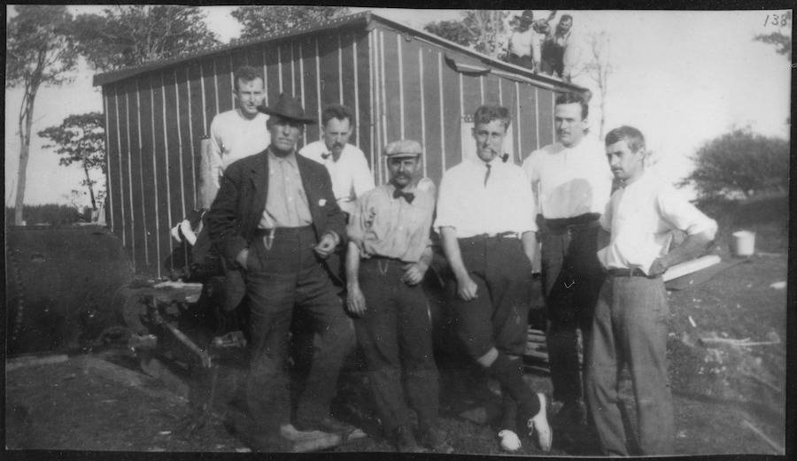

What is the Oak Island Money Pit mystery?
Nestled off the rugged coast of Nova Scotia, Oak Island has captivated treasure hunters and historians for over two centuries. This small island has become synonymous with one of the world's most enduring unsolved mysteries – the quest for a fabled treasure hidden deep within its depths and booby-trapped enclaves. The historical significance of Oak Island lies not only in the relentless pursuit of riches but in the relentless spirit of human curiosity and the unyielding pursuit of the unknown, making it a compelling destination for those drawn to history's most enduring puzzles.
Did you know?
Franklin D. Roosevelt, the 32nd US president, demonstrated
a profound interest in the island well before ascending to the presidency.
The roots of this captivating narrative extend back to the year 1795,
when a curious incident unfolded — a young boy reported witnessing mysterious
lights on the island, thereby igniting the curiosity that would echo through
time. If you're intrigued by the fascinating history that has unfolded on
this enigmatic island, you can delve deeper into its mysteries
Here
and why not sign up to our news letter Here
for updates on the mystery!

Franklin D. Roosevelt and others at Oak Island in 1909.